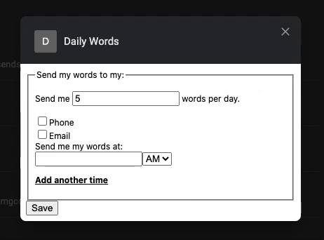
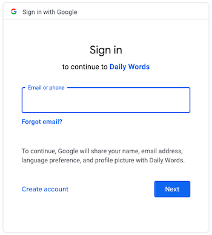
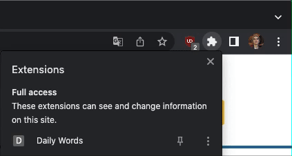
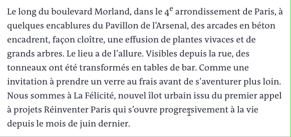
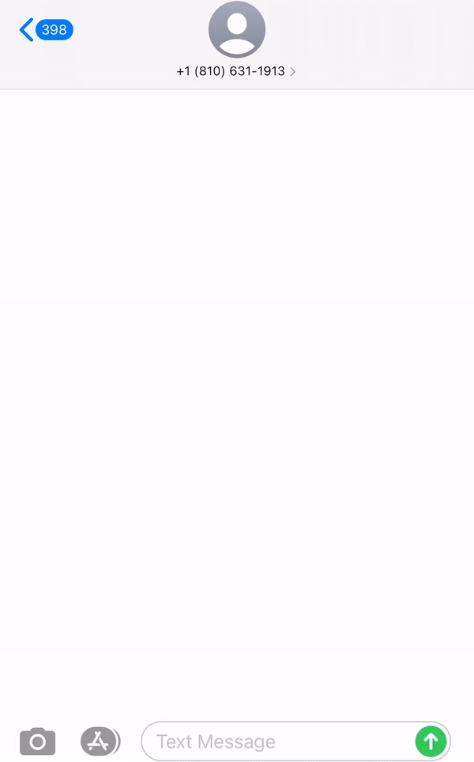

Daily Words is a chrome extension designed to make learning vocabulary as fun and convenient as possible. Source your own learning material and have translations sent to your phone or email every single day. Code for this project can be found here.
When a menu pops up, select where you would like to receive your translations daily. You may choose email, phone, or both. If you would like words to be sent to your phone, please include your phone number in the input box that will appear upon selecting "phone". You may also indicate how many translations you would like to be sent per day.
Google may ask for authentication as shown below. This is necessary for the extension to have access to your email address and identify the account being used.
Navigate to article in foreign language of your choosing.
Activate the extension by clicking the extension icon in the top right of your browser, clicking on "Daily Words" and then "activate".
Click on a word or highlight an entire phrase to get a translation. Translations are done using the DeepL API.
To save your translation, click "Save This Word" to save it to the database.
When you are done reading, repeat step 3 to deactivate the extension.
Words will be sent in the below format to the number provided in your extension options. In the video below for demonstration purposes the Celery Beat has been altered to send words every 3 seconds.
Currently words are sent based on a FIFO (first in first out) queue pattern. That is, the least recently seen words will be sent to your phone or email before more recent ones. Upon receiving a translation, it gets cycled back to the end of the queue. Currently, a spaced repetition option is in development as well. This option would enable users to provide feedback regarding ease of recall for each translation, which would alter the wait time before next review of that word accordingly.
Support for additional languages.